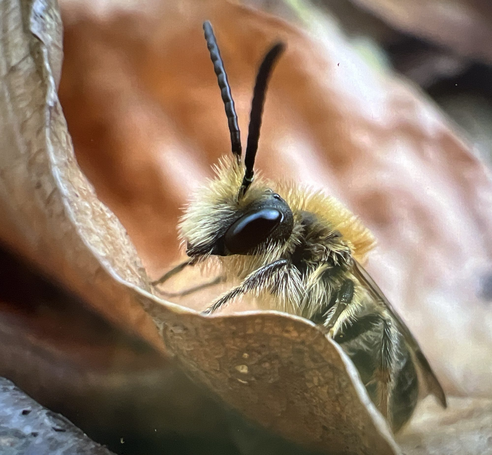
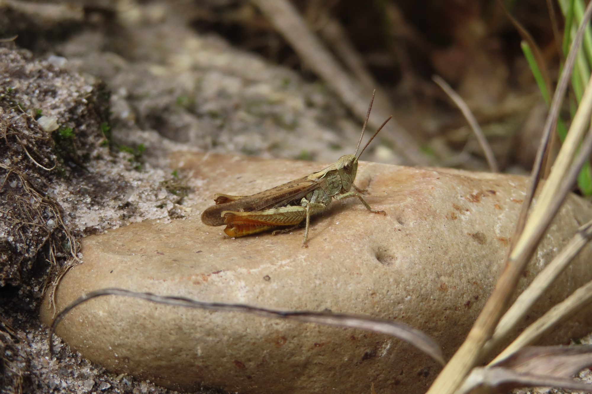
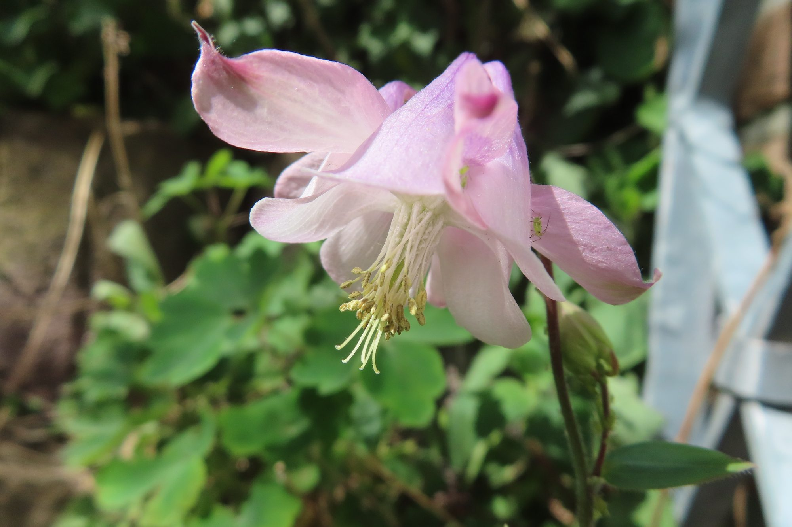
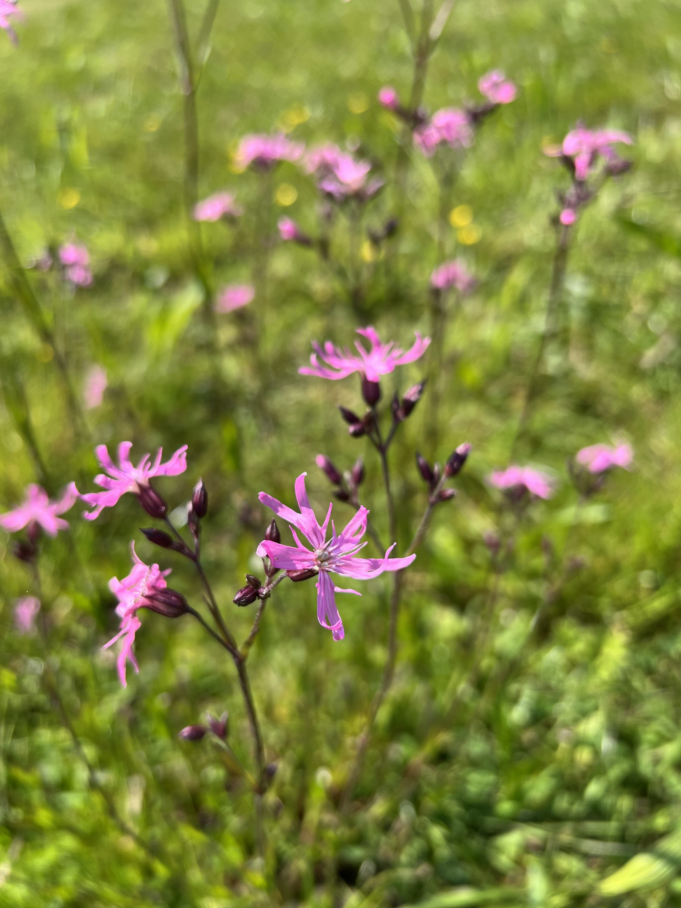

Pflanzenwelt
Pflanzenporträts
Pflanzen und Tiere gehören zusammen wie Schloss und Schlüssel. Jede Pflanze bietet Wohnung und Nahrung für bestimmte Schmetterlinge, Bienen, Käfer und andere Mitgeschöpfe. Hier stelle ich sie einzeln vor.

Porträt 01
Moschusmalve (Malva moschata)
Eine Pollen- und Nektarpflanze für zahlreiche Insekten — darunter die Steinhummel (Bombus lapidarius), die hier mit Pollenkörnchen im Pelz zu sehen ist. Für die Raupen des Malven-Dickkopffalters ist sie Futterpflanze. Wildbienen nutzen die Blüten als Schlaf- und Ruheplatz — die Stahlblaue Mauerbiene (Osmia caerulescens) verwendet sie zudem als Baumaterial für ihr Nest.
Tipp: Wer möchte, entfernt im Spätsommer verblühte Blüten, um noch mehr Wachstum neuer Blüten anzuregen.
Format
Was dich in einem Porträt erwartet
Standort & Licht
Wo die Pflanze sich wohlfühlt — Sonne, Halbschatten, Boden.
Blütezeit
Wann sie blüht und wie lange sie Nahrung bietet.
Wuchs & Pflege
Höhe, Winterhärte, Eignung für den Topf — und was zu tun ist.
Tierische Gäste
Welche Falter, Bienen und Käfer genau diese Pflanze brauchen.
Beobachtungen aus dem Garten
Wer sich sonst noch zeigt
Zwischen den Porträts sammeln sich Momentaufnahmen aus Garten und Wiese — kleine Begegnungen, die zeigen, wie viel Leben in einer naturnahen Fläche steckt.







Bald mehr
Weitere Porträts folgen.
Nach und nach wächst hier eine kleine Bibliothek von Pflanzen und den Tieren, die sie brauchen. Du hast eine Wunschpflanze oder eine Frage? Schreib mir gern.